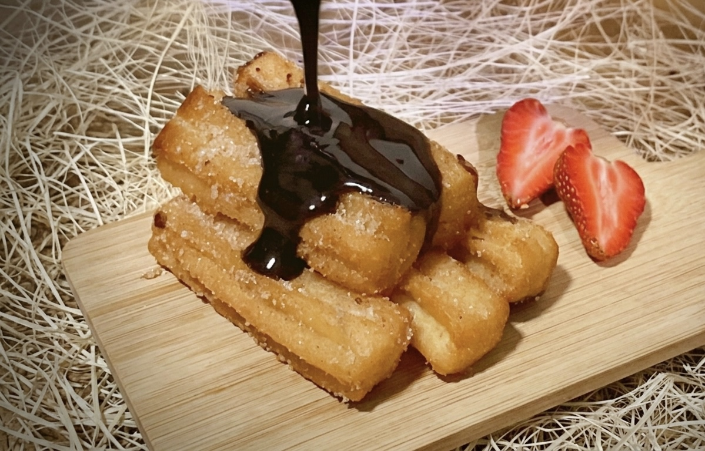
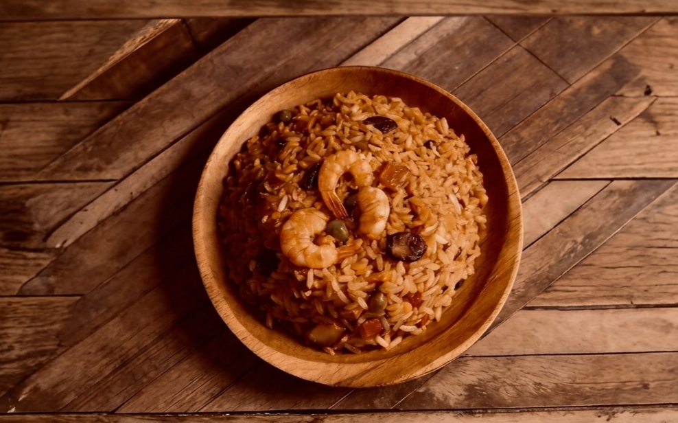
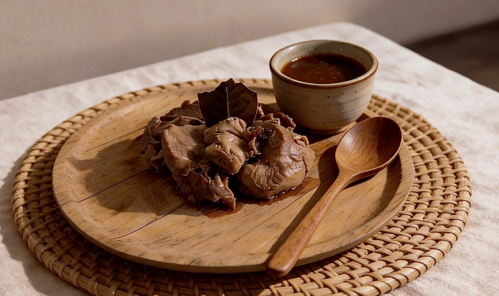
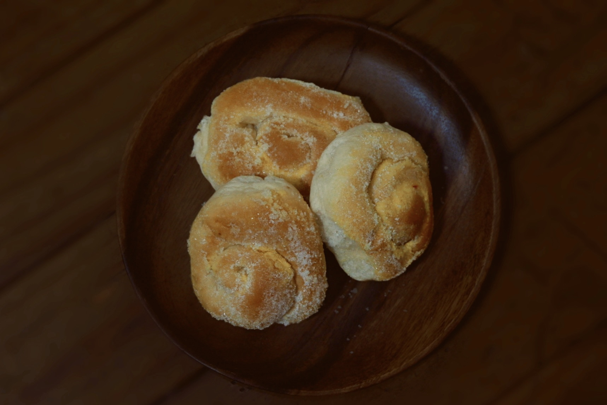
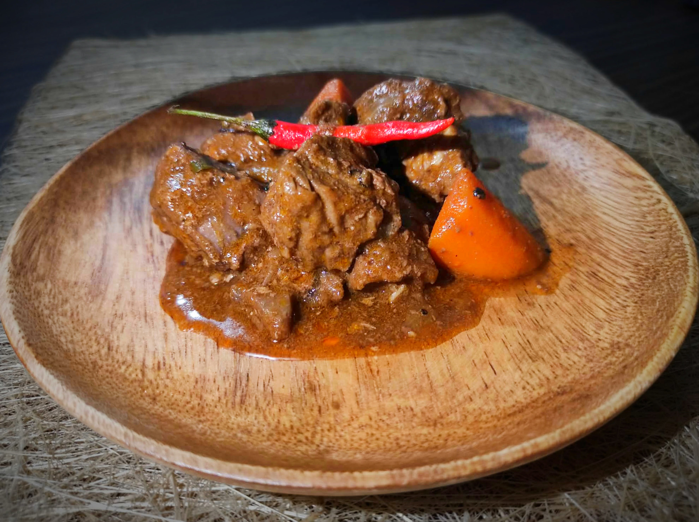
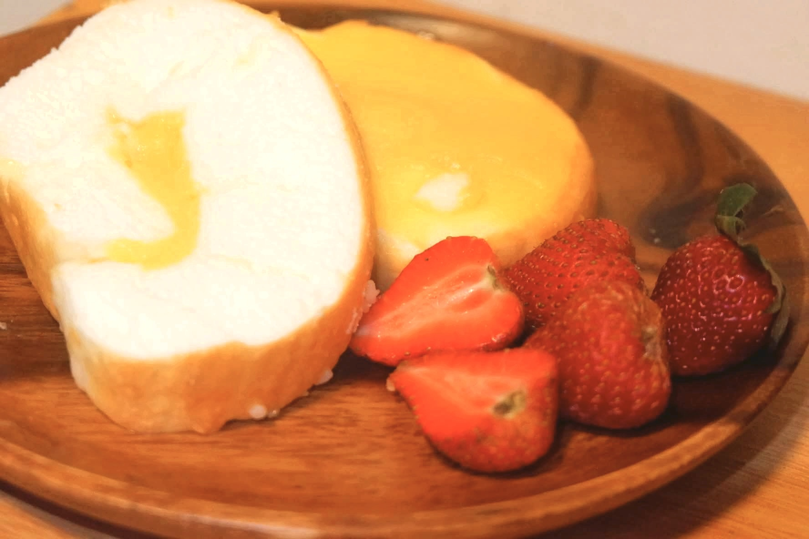

The Spanish Colonial Period greatly influenced Filipino cuisine, introducing new ingredients, cooking methods, and dishes that became part of local culture. Popular foods such as adobo, menudo, leche flan, paella and etc reflect the blending of Spanish flavors with Filipino traditions. Through time, these culinary influences became symbols of heritage and remain present in everyday Filipino dining.





